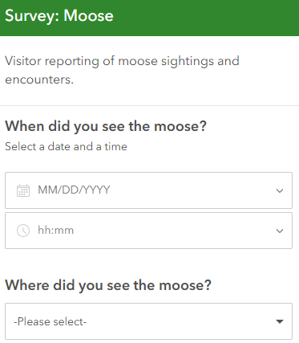

ArcGIS Survey123 Project
Project Overview
This project was completed as part of my learning experience through the ArcGIS Survey123 course by Esri. The goal was to design, publish, and manage interactive surveys that collect field data in real-time using a mobile-friendly interface.
Workflow and Key Highlights
-
Survey Design
I created a survey form from a blank Survey123 template. The form included various question types such as text, multiple-choice, date/time, and geolocation to capture accurate and relevant responses.

-
Publishing & Sharing
The designed survey was published through the Survey123 web platform. Permissions were configured for public or private access depending on the target audience, allowing real-time data collection through web or mobile devices.
Skills Demonstrated
- GIS Skills: Form design, configuration of logic and validation rules, and integration with ArcGIS Online.
- Publishing Workflows: Managing access, sharing settings, and deployment for data collection.